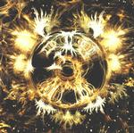

| Artist: | NeBeLNeST |
| Title: | NoVa EXPReSS |
| Label: | Cuneiform RuNe 154 |
| Length(s): | 46 minutes |
| Year(s) of release: | 2002 |
| Month of review: | [09/2002] |
| 1) | BLaCKMaiL | 9.35 |
| 2) | STiMPy BaR | 5.12 |
| 3) | ReDRuM | 11.03 |
| 4) | CiNeMa 1920 | 5.00 |
| 5) | NoVa EXPReSS | 15.32 |
All sound samples from NoVa eXPReSS appear here by permission of Cuneiform Records.
STiMPy BaR is carried by keys, and initially has a distinctly Swedish feel, augmented by the heavy bass, reminiscent of Anekdoten. As the track progresses guitar is added in, making it into a more complete whole (yes, we do consider degree of completeness in wholes). STiMPy BaR is more a complete composition than its predecessor.
ReDRuM has a rather freaky start, with pretty much everybody doing their (or a) thing. After a couple of minutes this mayhem subsides into a hard, jazzrock oriented, section, in itself moving towards more calm waters. This creates the basis for a build up towards the track's climax. Which is pretty good, but, well, not as good as hoped for.
CiNeMa 1920 features twinkly keys, but also some jazzrocky neurotics. Halfway through the instrumentalists come together and build towards a whole. Pretty good , falling short of the other stuff, though.
NoVa eXPReSS shows that not all tracks kick in gear immediately, with a collage of sounds and instruments slowly gaining in strength to then lose it again while converging into a more melodic section. From this brief experimental exercises are made, some more easily digested than others, every time returning to course.